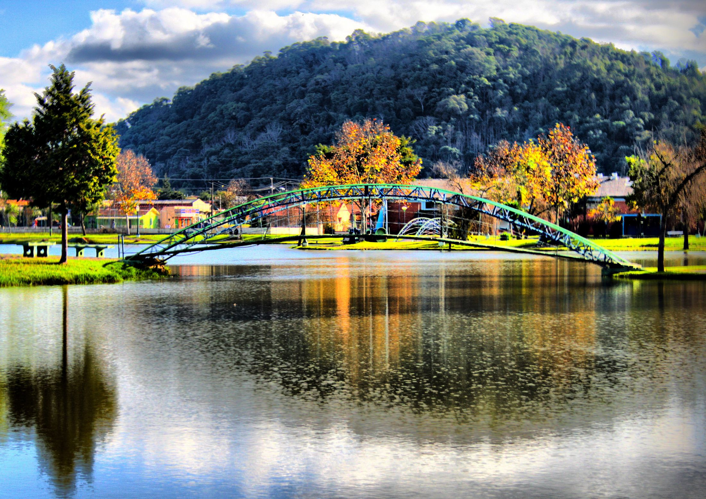

Volte para a página inicial
Home
Pontos Turísticos
Nossa Senhora das Graças - Santa
Parque Aquático

Casa da Cultura
Cachoeira do Pinho
Pinho de Baixo
Floresta Nacional de Irati - FLONA
Caverna do Canhadão
Centro de Tradições Willy Laars (Bairro Rio Bonito)
Kartódromo de Irati (Região de Cochinhos)
Arquitetura Religiosa Nossas Praças
Igrejas e Catedrais:
Igreja Matriz Nossa Senhora da Luz
Paróquia São Francisco
Veja mais em
Igrejas em Irati
Para mais informações sobre turismo, acesse:
Principais atrações em Irati